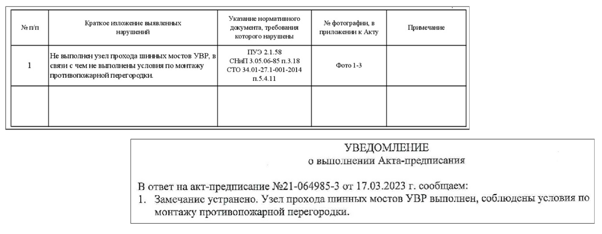

Вспоминаем состав ИД
Здравствуйте! Рада приветствовать Вас на обучении по теме: "Как сдать объемы выполненных работ заказчику". Меня зовут Сафуанова Вера, я эксперт строительного контроля с опытом работы более 14 лет. В других курсах нашей школы мы много раз говорили о том, как оформлять исполнительную документацию. Теперь настало время разобрать тему сдачи объемов работ заказчику, ведь именно этот этап часто вызывает трудности: финальная комплектация, исправление замечаний, передача документов заказчику.

На курсе разберем, что проверить перед передачей документов на проверку, как сверить сметы с исполнительной документацией и корректно ответить на замечания заказчика. Вы узнаете, как правильно оформить и передать комплект на подпись.
В каждом уроке — реальные примеры из практики подрядчиков и типичные ошибки, которые совершают многие. Все знания закрепим на практике, чтобы сдача объемов проходила с первой попытки.
Готовим пакет документов
В своей работе я регулярно принимаю исполнительную документацию на разных объектах. И могу сказать одно: ошибки в оформлении у всех одинаковые.
Чтобы говорить с вами на одном языке, давайте повторим состав исполнительной документации, которая подтверждает выполненные объемы работ.
Но если в договоре подряда установлены дополнительные требования к составу ИД, то необходимо предусмотреть и их наличие.
Не забывайте про ЛНД. Если она утверждена политикой компании, проверка комплекта будет проводиться строго по ее перечню.
Часто состав ИД дополняется следующими документами:
- Реестр ИД
- Ведомость объемов выполненных работ
- Приказы на ответственных лиц со стороны подрядчика
- Актуальная выписка из СРО (не позднее шести месяцев от даты предъявляемых работ)
- Уведомление о включении сведений в НРС ответственного представителя подрядчика ответственного за проведение СК
При комплектации тома ИД руководствуйтесь именно таким порядком, если иное не предусмотрено договором. Так у заказчика может быть требование о комплектации тома в порядке «АОСР+схема+паспорт» на вид работ или «все АОСР+все схемы+все паспорта».
Используйте «Метод стройконтроля». Станьте на место инженера, который будет проверять вашу документацию. Проверяйте ИД критично — так вы сами заметите ошибки, которые все равно увидит стройконтроль. Когда я разбираю ошибки вместе с инженером подрядчика, прошу представить себя на моем месте. Почти всегда он сам находит недочеты.
При проверке первых документов у меня появились замечания. Попробуйте найти их сами. Выполните упражнение и определите, какие ошибки допустил подрядчик при оформлении первых листов тома ИД.
При комплектации тома исполнительной документации ориентируйтесь на порядок, установленный договором или ЛНД. Стройконтроль часто возвращает комплект еще до проверки, если порядок нарушен.
Локальные требования могут быть разными:
- «АОСР + схема + паспорт» на каждый вид работ;
- «все АОСР + все схемы + все паспорта» в одном томе;
- отдельные тома для АОСР, схем и паспортов.
Если порядок договором не предусмотрен, но легче и нагляднее выглядит порядок «АОСР+схема+паспорт» – представитель Заказчика сразу проверит даты, материалы и объем выполненных работ.
Дам еще один практический совет. После формирования комплекта ИД обязательно проверьте правильность заполнения АОСР.
Я часто нахожу такие ошибки:
- несовпадение дат в паспорте и АОСР,
- различия в объемах между паспортом и исполнительной схемой.
Чтобы вы понимали, в каких случаях будут выставлены замечания, выполните упражнение. Для этого нажмите на каждый документ, чтобы увидеть его полный размер, и соотнесите с ошибками.
Главное при формировании пакета ИД — устранение замечаний по предписаниям. Если по результатам проверки объекта составлен акт-предписание, все указанные нарушения нужно устранить до сдачи объема работ.
Прораб может показать устранение на повторном осмотре, но акт об устранении предписания должен быть направлен заранее — до подачи выполнения или вместе с передачей ИД на проверку. Без этого уведомления у стройконтроля есть основания не принять объем.

Теперь вы научились проверять свою ИД перед передачей комплекта на проверку. Но это только половина пути к успешной защите объемов работ. Переходите к следующему уроку. Я расскажу вам о том, как проверить один из самых важных документов в вашем выполнении – смету.